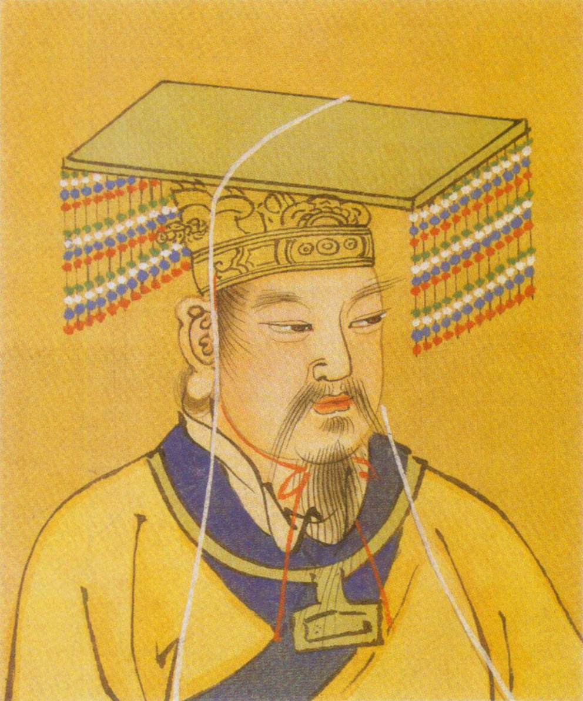
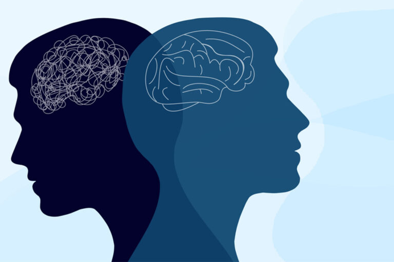

Nomana Purewal
Course Content and What I Learned
I love to delve into many different kinds of topics and enjoy expanding my view of the world
around me through learning! This is a little bit about each course and what I learned from
it:
|
|
|
Worlds of Ancient Greece and Rome
This is a course offered by the Humanities department and throughout the fall and winter semester (an eight month course). It helped us understand the ancient Greeks and Romans through their prominent plays and texts. We analyzed, The Iliad by Homer, two Greek tragedies: Agamemnon, and Oedipus the King. And to analyze their ways of thinking or morality and life, we read the Gospel of Matthew and Immanuel Kant’s, The Metaphysics of Morals. This was a very reading intensive course and although I have read for leisure and school in the past, the way we analyzed and discussed texts in this class really changed the way I view how much I can gain from fictional texts now.
|
The Chinese Body
This course is offered by the History department and was about how people experienced daily life throughout Chinese history. This was also an eight month long course in which we learned about the major dynasty’s after the Shang Dynasty up to the present government. There was a major emphasis on medicine throughout the course, as it’s a prominent part of Chinese history and culture. We also learned about the importance of food in Chinese culture, and ended the course with learning about the practice of foot-binding through primary texts and a fictional text by Feng Jicai named, The Three-Inch Golden Lotus.
|

|
|

|
Introduction to Psychology
This course is offered by the Psychology department and was also a two semester course. It taught me a basic introduction to psychological theories and concepts. We learned about the biology behind behaviour, sensation, perception, memory and cognition. We also learned about the development of these functions throughout the lifespan. The course also taught me more about myself and my patterns and how to create healthier ones.
|
Introduction to Information Technology
I am currently taking this course. It is offered by the Information Technology department and is a in depth introduction to the basics of IT. My favourite part of this course has been learning about the Little Man Computer, which simulates a CPU, and working on small assignments related to it. Some other topics we learned about are: computer components and architecture, number systems, memory and networks.
|

|
|
|
Information and Organizations
This is another course I am currently taking. It is about the importance of information to organizations and teaches ways to use information technologies to organize and use information correctly for an objective. We also learned about some practical uses of applications such as Excel and Microsoft and are now learning the basics of HTML (through the creation of this webpage).
|
Introduction to Sets and Logic
This course is also a course I am currently taking. It is an introduction to discrete mathematics and is useful for computer science and coding. Some concepts I learned in the course are logic, sets, functions, proofs and even more proofs. I enjoy the problem solving used in this course but it is probably the most difficult course for me on this list.
|
|
|
|| ITEC1010 A Informations and Organizations (Fall 2025-2026) || Assignment 2 || links for pictures:
https://biuinternational.com/news/ancient-greece-and-rome-a-trip-back-in-time/ ||
https://simple.wikipedia.org/wiki/Yellow_Emperor ||
https://bouve.northeastern.edu/news/what-is-applied-psychology-why-is-it-important/ ||
https://engineering.jhu.edu/ams/research/discrete-mathematics/ ||
https://ccitraining.edu/blog/what-is-information-technology-it/ ||
https://www.ecpi.edu/blog/how-do-information-systems-help-organizations-thrive ||
|